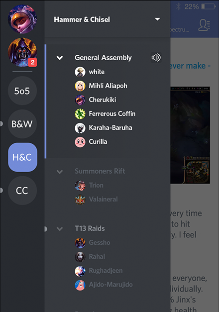
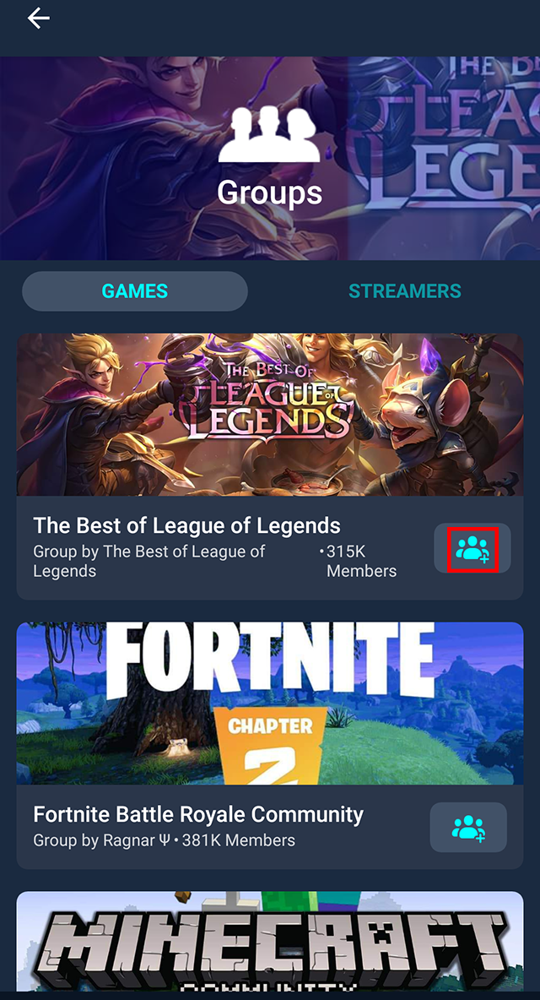
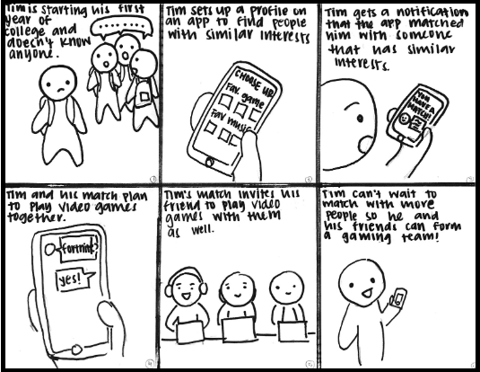
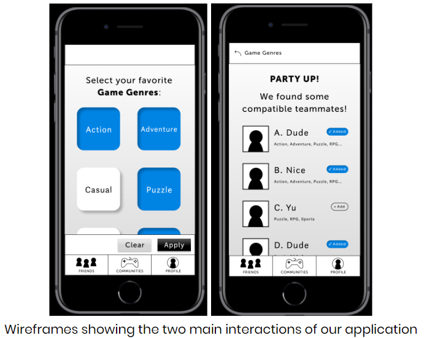
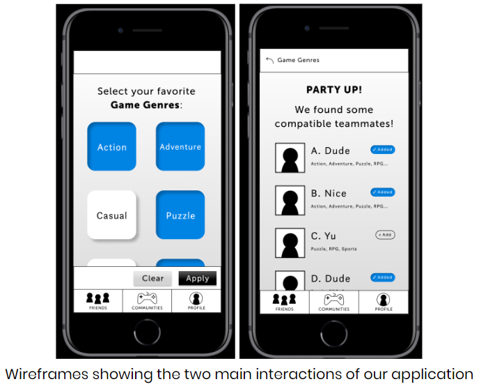
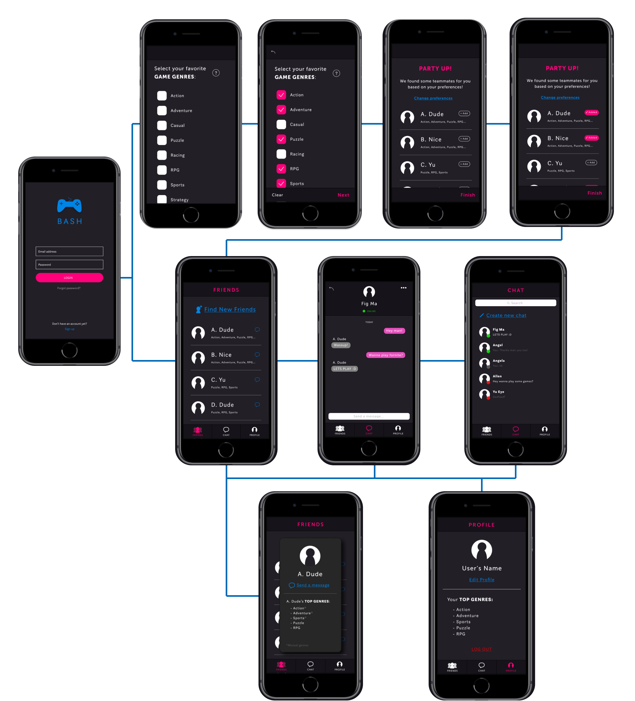
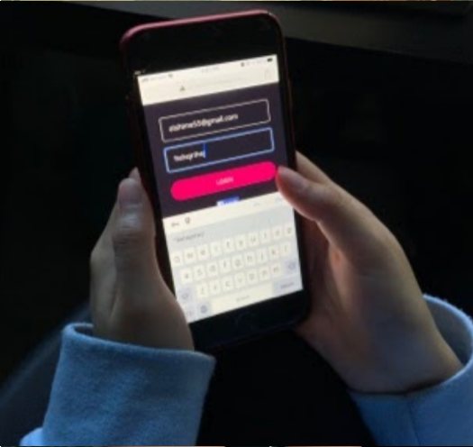
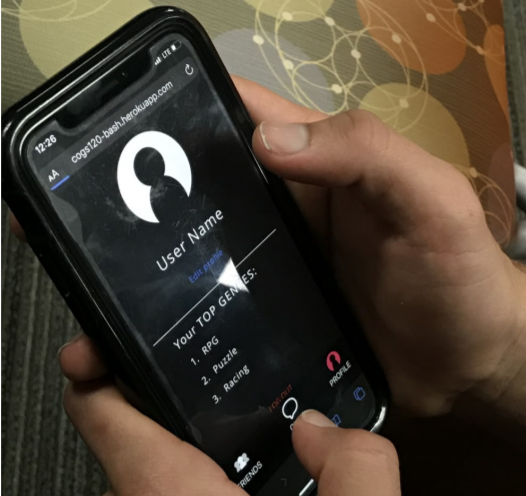
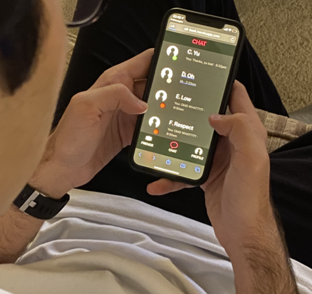

Background
Imagine you’re playing a video game match online, and you’re randomly placed into a team. You might find a group of people you get along really well with, and you end up winning the match. But once you finish the match, you probably won’t ever find yourself playing with those people ever again.
You might even load up another match and end up in a game with some “toxic” players ー people who act and speak negatively towards others in the game, whether it be a teammate or someone on the opposing side. This can alter your whole experience in a match, making it difficult to have fun or want to continue playing.
Even though online games can connect us to a large variety of people, these connections are often shallow and sometimes negative, making it difficult to form meaningful relationships or feel any sense of community.
Needfinding
We observed 3 different gamers attempt to make friends online on 3 different gaming platforms: League of Legends on PC, Call of Duty on PS4, and Smash Ultimate on Nintendo Switch. We found that the overall problem faced by gamers was building the initial relationship with others in the game.
Each of these games and platforms are built differently. League of Legends uses its own chat interface, Call of Duty uses audio communication, and Smash Ultimate has no platform for communication between players. Each of these platforms has their own challenges for making friends. In League of Legends, the participant had a difficult time getting teammates to talk as they were more driven to play than look at the chatbox. In Call of Duty, the participant found that some of their teammates had no headset or mic to communicate, while other teammates responded negatively to their attempts to make conversation. Lastly, the platform for Nintendo Switch does not allow for any kind of communication between users as the online platform is strictly gameplay based.
In order to bridge this gap in communication and build friendships, gamers need a way to find and talk to people with similar interests, gameplay styles, and most importantly, people who have a mutual desire to find friends.
Competitive Audit
We performed a competitive analysis on 3 major relevant applications: Discord, Reddit, and Facebook groups.
Discord
| Pros | Cons |
|---|---|
|
|
| Pros | Cons |
|---|---|
|
|
Facebook Groups
| Pros | Cons |
|---|---|
|
|
From this competitive analysis, we hope to create an application that is more socially driven than these other platforms. Our end goal is for the user to be able to find friends by building one on one relationships based on shared interests, without it being intimidating or overwhelming. Our hope for app is that it could be used in conjunction with these other platforms, such as finding a friend and then being able to game with them through Discord, or sharing Facebook or Reddit posts with these newfound friends.
Storyboarding
We created storyboards to visualize user needs and demonstrate the interactions needed to satisfy this need. Utilizing our storyboards, we created and refined our paper prototypes. 
Low-fidelity Prototypes
We created paper prototypes to demonstrate the workflow of our app. After conducting heuristic evaluations
on these paper prototypes, we were able to use feedback when building our wireframe.
Examples of these improvements include:
- Making the back button more descriptive so users know where they would be redirected to
- Not showing the navigation bar before users have selected game genres
- Allowing users to clear their selection of genres for user freedom
- Showing descriptive information about people the user matches with
 

High-fidelity Prototypes
Our final prototype was scaled back due to time constraints, but still followed the general workflow of our
paper prototype. On a user’s first login, they are prompted to select what video game genres they are
interested in. From there, they are matched accordingly with other users. They can add these suggested users
as friends and then begin chatting with them. Users are also able to update their genres of interest as well
as add new friends.

User Testing
After creating our high fidelity prototype, we tested 3 people in our user base -- people who play video games. We recorded positive and negative feedback from our participants, as well as their breakdowns and successes while using the app.
Participant 1

Observed breakdowns and successes:
- Breakdown: Participant's password was not hidden upon logging in
- Success: Participant pressed add button next to a suggested friend
- Breakdown: Participant was unable to log out due to button being hidden
Direct feedback:
- Buttons are small
- Color of some buttons are hard to see
- Would like different colors between chat
- Inconsitency in navigation bars
- Allow more freedom when editing profile
Participant 2

Observed breakdowns and successes:
- Breakdown: Participant tried to view a suggested friend's profile
- Breakdown: Participant accidentally clicked an navigation link due to it covering a message
- Success: Participant navigated to messages to chat with a friend
- Breakdown: Participant was unable to log out due to button being hidden
Direct feedback:
- Resize content so scrolling is needed to see one extra item
- Buttons are small and hard to click
- Would like to see profiles of friends
- Be able to send messages from friends screen
- Fix the ratio of buttons and navigation
Participant 3

Observed breakdowns and successes:
- Success: Clicked all preferred genres immediately
- Success: Used navigation to view messages
- Breakdown: Was able to edit profile to add the same genre
- Breakdown: After sending a message to someone, the chat page did not refresh
Direct feedback:
- Would like to view profiles of friends
- Wants to search for messages
- Update preferred genres
- Friend request instead of just adding
- Content doesn't refresh
We saw two main patterns among our users. One common behavior was an attempt to view someone’s profile when
trying to add or message them, as this is a common feature of social media. Another pattern we observed was
participants not being able to press buttons due to them being too small or not visible due to the other
elements in the interface.
After testing, the changes we made to increase usability included:
- Fixing small bugs in implementation, such as user's password not being hidden
- Changing chat bubble colors to differentiate between sent and received messages
- Increasing size of buttons to reduce errors (back button, add button, and bottom navigation)
- Resizing layout elements so users would not have to scroll to see all options
- Showing mutual genres between users when suggesting friends
- Adding profile pages to suggested and added friends
Other features we were not able to implement due to the scope and timeframe of the project, or not having the resources needed to implement, such as access to an API to simulate a fully functioning friend request system.
Alternate Designs
After performing user testing, we chose to redesign our suggestion page from friends and analyze it through
A/B testing. As shown, we decided to change the page to show only the mutual genres shared between the
suggested friends and the users.

In our A/B testing, we measured the number of times users clicked the “Add” button; our expected outcome was
that users would choose to add more friends when they saw mutual genres because it would be more clear as to
why the friends were suggested to them.
Using Google analytics to our test, we found that for page A, 27% of suggested friends were added by users,
and for page B, 29% of suggested friends were added. We concluded that there was no statistically
significant difference between the two designs because of how close the percentages are.
In the end, we still chose to keep page B in our final design due to user feedback we received. In addition,
we support our decision from the assumption that similar to other social media, users tend to add or follow
others who have common interests.
Final Product + Future Work
View our final product here!
*Note: our product is best viewed on mobile browsers.
We were able to publish our app as a working prototype. Unfortunately, due to time and resources, we were
not able
to create a fully functioning social app, so the friends and chat features are simulated. I hope to revisit
this project
and find a way to utilize API's and databases to allow for messaging between different users on the app.
Final shoutout to my wonderful teammates, Allen and Angel :)
← Back to homepage